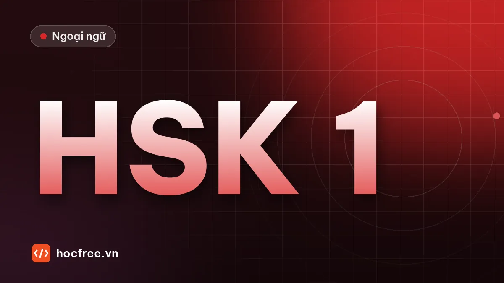

Bài kiểm tra HSK 1 tự biên soạn: nghe, đọc và nói, có đáp án
Bài kiểm tra tổng hợp sau 9 tuần: nghe qua văn bản đọc to, đọc hiểu, ngữ pháp và nói theo câu hỏi, có thang chấm và điều kiện sang HSK 2.

Học xong bài này, bạn sẽ
- Đánh giá trọn kiến thức HSK 1
- Biết điểm yếu theo từng kỹ năng
- Đạt điều kiện sang giai đoạn HSK 2
Nên học trước: 了 cơ bản, 没 và trợ từ 呢
Nội dung bài viết
Bạn đã đi hết 9 tuần và nắm khoảng 300 từ. Bài kiểm tra này tổng hợp toàn bộ kiến thức HSK 1 theo 4 kỹ năng. Đây là bài tự biên soạn để tự đánh giá, không phải đề thi thật và không mô phỏng chính xác định dạng đề HSK 1. Làm trong 60 phút, cộng 10 phút phần nói.
Chuẩn bị phần nghe
Trang này không phát âm thanh. Có hai cách làm phần nghe:
- Nhờ một người đọc (người biết tiếng Trung, hoặc bạn học): đưa họ phần "Văn bản nghe" bên dưới, mỗi câu đọc 2 lần, tốc độ vừa phải.
- Dùng công cụ đọc văn bản: dán từng câu vào trình dịch hoặc từ điển có nút phát âm, bấm nghe 2 lần, không nhìn màn hình.
Đừng mở phần văn bản nghe trước khi làm xong.
Phần 1. Nghe (10 câu)
Nghe mỗi câu hoặc đoạn hội thoại, chọn đáp án đúng.
1. Người nói làm nghề gì? A. giáo viên B. bác sĩ C. kỹ sư
2. Bây giờ là mấy giờ? A. 7:30 B. 8:30 C. 8:15
3. Nhà người nói có mấy người? A. 3 B. 4 C. 5
4. Cái áo giá bao nhiêu? A. 80 tệ B. 18 tệ C. 88 tệ
5. Người nói muốn uống gì? A. cà phê B. trà C. nước
6. Giám đốc đang ở đâu? A. văn phòng B. nhà máy C. ngân hàng
7. Họ họp vào hôm nào? A. thứ Hai B. thứ Tư C. thứ Năm
8. Người nữ đã ăn sáng chưa? A. ăn rồi B. chưa ăn C. không nói
9. Người nam biết làm gì? A. lái xe B. bơi C. nói tiếng Anh
10. Ngân hàng ở đâu? A. bên trái công ty B. đối diện công ty C. sau công ty
Văn bản nghe (chỉ người đọc được xem trước)
- 我不是老师，我是医生。
- 现在八点半，我们走吧。
- 我家有五口人：爸爸、妈妈、两个妹妹和我。
- A：这件衣服多少钱？ B：八十块。
- 我不喝咖啡，给我一杯茶吧。
- A：王经理在办公室吗？ B：不在，他去工厂了。
- A：我们星期三开会吗？ B：不是星期三，是星期四。
- 男：你吃早饭了吗？ 女：还没吃呢。
- 我会开车，可是不会游泳。
- 银行不在公司左边，在公司对面。
Phần 2. Đọc hiểu (10 câu)
A. Ghép câu hỏi với câu trả lời (câu 11–15):
11. 你叫什么名字？ 12. 你家在哪儿？ 13. 你会说汉语吗？ 14. 你几点下班？ 15. 这个多少钱？
a. 五点半。 b. 会一点儿。 c. 我叫黎明。 d. 二十块。 e. 在河内。
B. Đọc đoạn văn, trả lời Đúng / Sai (câu 16–20):
我叫范兰，在一个中国公司工作。我们公司在北宁，不大，有八十个人。我每天七点半上班，中午跟同事一起在公司吃饭。我很喜欢我的工作，可是有点儿累。我想学好汉语，因为我的经理是中国人。昨天我没去上班，因为我去医院了。
16. 范兰在越南公司工作。 17. 她的公司有八十个人。 18. 她中午在家吃饭。 19. 她学汉语是因为经理是中国人。 20. 昨天她去上班了。
北宁 Běiníng: Bắc Ninh. 学好 xué hǎo: học giỏi.
Phần 3. Ngữ pháp và viết (10 câu)
A. Chọn đáp án (21–25):
21. 我___会说英语。 A. 也不 B. 不也 C. 没也
22. 苹果多少钱___斤？ A. 一 B. 个 C. 几
23. 我买___两件衣服。 A. 了 B. 吗 C. 吧
24. 你的手机___桌子上。 A. 有 B. 在 C. 是
25. 昨天我___去公司。 A. 不 B. 没 C. 没有了
B. Sắp xếp thành câu (26–28):
26. 在 / 吃 / 我们 / 公司 / 午饭 / 中午
27. 想 / 周末 / 我 / 休息 / 在家
28. 给 / 我 / 打电话 / 明天 / 你
C. Dịch sang tiếng Trung (29–30):
29. Tôi không ăn thịt bò, cho tôi một bát mì.
30. Bạn ăn cơm chưa? – Vẫn chưa.
Đáp án
Xem đáp án 30 câu
Nghe: 1B 2B 3C 4A 5B 6B 7C 8B 9A 10B.
Đọc: 11c 12e 13b 14a 15d; 16 S (công ty Trung Quốc) 17 Đ 18 S (ăn ở công ty) 19 Đ 20 S (đi bệnh viện).
Ngữ pháp: 21A 22A 23A 24B 25B.
Sắp xếp: 26. 我们中午在公司吃午饭。 27. 周末我想在家休息。/ 我周末想在家休息。 28. 我明天给你打电话。/ 明天我给你打电话。
Dịch: 29. 我不吃牛肉，给我一碗面条（吧）。/ 来一碗面条。 30. 你吃饭了吗？——还没（吃）呢。
Phần 4. Nói (10 phút)
Ghi âm, không nhìn giấy. Mỗi phần nói liền mạch, ngắt không quá 3 giây.
- Giới thiệu bản thân 1 phút: tên, tuổi, quê, gia đình, công việc, giờ làm.
- Trả lời 5 câu hỏi (nhờ người hỏi hoặc tự đọc rồi trả lời): 你住在哪儿？你每天几点起床？你喜欢喝什么？昨天你做什么了？你为什么学汉语？
- Đóng vai 1 phút: mua 2 món ở cửa hàng, hỏi giá, mặc cả, trả tiền.
| Tiêu chí | 0 điểm | 1 điểm | 2 điểm |
|---|---|---|---|
| Phát âm, thanh điệu | Nhiều từ không nghe ra | Hiểu được, sai thanh khá nhiều | Rõ, thanh 1 và 4 đúng |
| Ngữ pháp | Sai trật tự câu thường xuyên | Sai vài lỗi nhỏ | Gần như đúng hết |
| Từ vựng | Thiếu từ, phải dùng tiếng Việt | Đủ ý, lặp từ nhiều | Đủ ý, dùng từ đa dạng |
| Trôi chảy | Ngắt quãng liên tục | Đôi lúc dừng lâu | Liền mạch |
| Hoàn thành nhiệm vụ | Thiếu phần lớn | Thiếu 1–2 ý | Đủ ý cả 3 phần |
So bản ghi hôm nay với bản ghi bài kiểm tra tuần 5. Bạn nên thấy tiến bộ rõ ở độ dài câu và độ trôi chảy.
Chấm điểm và điều kiện chuyển giai đoạn
| Phần | Điểm tối đa | Mã lỗi |
|---|---|---|
| Nghe | 10 | Đ |
| Đọc | 10 | Đ, V |
| Ngữ pháp và viết | 10 | G, W |
| Nói | 10 | P, G |
- Từ 28/40 (70%) và không phần nào dưới 6/10: sang giai đoạn 4, HSK 2.
- Tổng đạt nhưng có phần dưới 6: vẫn sang HSK 2, nhưng 2 tuần tới mỗi ngày thêm 10 phút cho kỹ năng yếu (nghe: nghe chép; nói: ghi âm hội thoại; viết: viết lại câu sai).
- Dưới 28: ôn 1 tuần theo sổ lỗi. Ưu tiên lại các bài trật tự câu, động từ năng nguyện, 了 cơ bản, rồi tự soạn một bài tương tự (đổi tên, số, nơi chốn) và làm lại.
Bước tiếp theo: giai đoạn 4 mở đầu với hai cách dùng của 了.
Bài tập thực hành
- Làm toàn bộ bài kiểm tra trong 60 phút, phần nghe nhờ người đọc hoặc dùng chức năng đọc văn bản.
- Nói 1 phút giới thiệu bản thân, gia đình và công việc, ghi âm và tự chấm theo thang trong bài.
Làm xong bài tập mới chuyển sang bài tiếp theo: đọc to, tự viết chữ Hán và tự chấm đáp án là cách duy nhất để nhớ lâu.